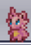
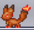
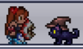

Apparently Terraria had a crossover with Palworld and added two summons from that game that are honestly rather adorable and really fucking useful.
Cattiva and Foxparks.


Cattiva can help you mine faster and Foxparks is just a really really powerful early game summon.
And I was jealous of Kristian and really wanted them so I spent a really long time grinding for them.
They only spawn on the outer parts of the world so I spent a lot of time sittin in the jungle waiting for them to spawn.
Eventually I built a "farm" by making what was essentially a dirt bridge and planted grass on it for them to spawn on.
It worked really well and I was able to get both of them relatively quickly after this.
I also got a new kitty pet from a goodie bag!

And after breaking some hearts, fighting a goblin army and finding the tinkerer underground I was able to make frostspark boots pretty easily. I got really lucky with finding exactly what I needed pretty much right away. :3
It was time to start fighting the early bosses.